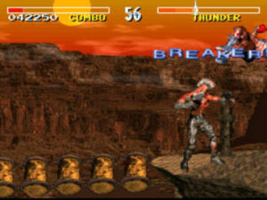

Breaker
 De: La Frikipedia, la enciclopedia extremadamente seria.
De: La Frikipedia, la enciclopedia extremadamente seria.
Dos personas anónimas a las cuales un breaker les ha sentado realmente mal; el sujeto de rojo aún tiene el
mástil tieso.
Un breaker (del inglés rompedor, en homenaje al juego de SNES y recreativas Killer Instinct) es cuando estás meando tranquilamente en un sitio en el cual no hay nadie observando y de repente aparecen ciento y la madre y claro, ves asomar unas churris que flipas y no vas a seguir con la mano agarrada al pistolón. Esto es, cuando meas y te cortan la meada, se denomina breaker. Por el levante español también se le suele llamar "arrugao".
 Por lo visto T.J. Combo estaba meando y Thunder le ha hecho un breakerAZO de la hostia, hasta se le ha el límite de la barra de salud brillando.
Consecuencias de un breaker
ADVERTENCIA: Tómense estas advertencias en serio, queridos lectores, pues las consecuencias de un breaker igual o más serias que Chiquito de la Calzada en tanga, con gafas de sol y montado en una Harley Davidson.
Que te hagan un breaker es lo peor que te puede suceder, puesto que, al hacerte uno, automáticamente te contagian ladillas, sífilis, gonorrea, gripe aviar, resfriado, el Virus T, el Virus G, malaria, enfermedad del sueño, escozor anal, picor genital, lepra, cáncer de mama, cáncer de testículos, cáncer de vulva, cáncer de...en fin, todos los tipos de cáncer habidos y por haber; osteoporosis, narcolepsia, epilepsia, todo lo acabado en "-epsia" y, finalmente, TE CONVIERTES EN HOMOSEXUAL. Aparte de que, al mamonazo que te haga un breaker, se le resetea a 0 su cuenta del PPM, pero no sólo eso, sino que los puntos que el tenía acumulados no desaparecen, TE LOS ENDOSA A TI.
Obviamente, todo esto afecta al metabolismo del sujeto paciente, lo que hace que este artículo sea PERFECTAMENTE INCLUIBLE en la sección Biología del Frikinóbel.
Tipos de breakers
¡Toma Counter breaker,
perro cabrón!
Aquí está la estrella: Snake haciendo un Freezebreaker.
- Standard: Ahhh... el breaker de toda la vida. Cuando estás meando plácidamente y llega alguien que te corta la meada.
- Counter Breaker: Cuando vas a mear a un sitio y sucede exactamente al revés, tú eres el que acabas meado por algo/alguien.
- Auto Breaker: Cuando te meas encima y te dejas un lamparonzaco en el pantalón.
- Freeze Breaker: Exclusivo de Solid Snake. Consiste en equiparse cualquier arma (incluso el Stinger), acercarse con sigilo por la espalda a alguien que esté meando y hacerle un "FREEZE!".
Breakers en la cultura popular (del populacho, que no del partido)
Tal es la aceptación que han tenido los breakers en la cultura popular (del pueblo y del partido, mayormente del partido), que han salido incluso videojuegos sobre los breakers. La saga Metal Gear Solid se basa exclusivamente en los Freezebreakers, por ejemplo.
Unreal Breaker Tournament
El único videojuego oficial en el que aparecen los breakers (además de otros perversos modos de juego, como podréis observar) es en el Unreal Breaker Tournament, cuyos modos de juego son:
- Breaker Deathmatch (Combate a muerte con breakers): El deathmatch breaker de toda la vida. Cada vez que pillas a uno meando cuenta como un frag. Cuanto más espectacular sea la entrada al hacer el breaker, más puntos ganarás, y se pueden enlazar los frags, digoo breakers.
- Team Breaker Deathmatch (Combate a muerte por equipos con breakers): Como el Breaker Deathmatch, pero por equipos. Además, se pueden ajustar las opciones de "fuego amigo".
- Last Man Standing (Último hombre en pie): Como el Breaker Deathmatch, pero con vidas. Gana el que siga en pie cuando los demás jugadores hayan sido "Breakerados" o "Breakerizados".
- Castrati (Castrati): Los jugadores se dividen en dos razas: los castrati y los machos tordos. Los machos tordos llevan recortadas y semiautomáticas para eliminar a los castrati. Los castrati no llevan armas, pero no pueden ser Breakerizados, con lo cual ésta es su única posibilidad de sobrevivir: Breakerizar a los machos tordos.
Se rumorea que el juego estará listo para navidad del 2008, por lo que podremos ver algún avance en el E3 del año que viene.
¿Sabías que...
- ...hacerle un breaker a Su Graciosidad es imposible porque no mea?
- ...una vez me hicieron más de 15 breakers en la misma noche en un intervalo de 3 horas? (Verídico)
- ...si consigues hacerle 10 breakers a alguien en una misma noche te dan un bonus de 100.000 diez-billones gúgoles de puntos?
- ...sacudírsela más de 3 veces al mear se considera gayola?
- ...cuando le haces a alguien un breaker, reseteas a cero tu cuenta del PPM?
- ...si le haces un breaker a una mujer, ésta tendrá sexo contigo?
- ...si le haces un breaker a TU mujer, se irá indefectiblemente con Juan Cuesta para tener sexo con su prima?
Autor(es):
- Nexo
- Max Slug
- Aque
- Epikurolibre
- Niko
- Die996
- Veni Vidi Vici
- Jurliki
- Caldofranvlc
- Shadowmura
Frikipedia 2005-2016, Licencia
GFDL 1.2 - Extraído por FrikiLeaks